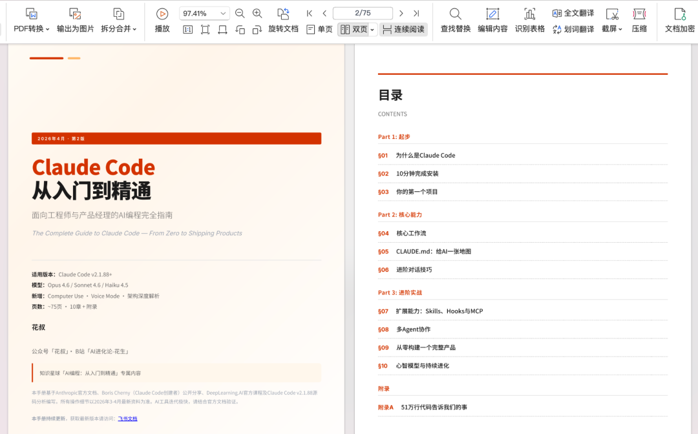
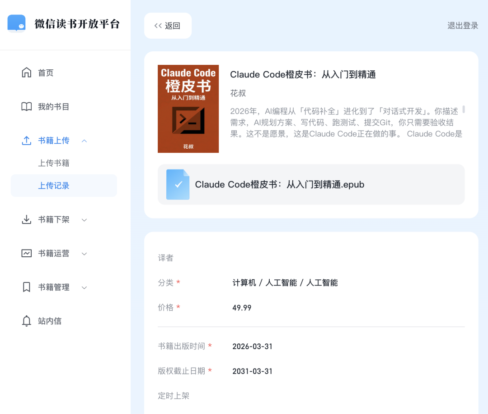
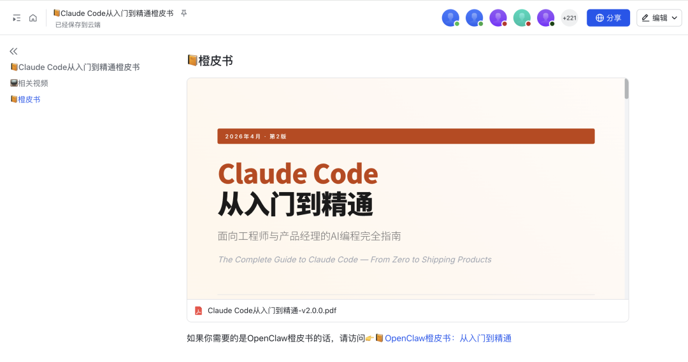

既然Claude Code源码都泄露了，那我这份75页的橙皮书也没什么好藏的了。 
这本橙皮书其实本来是准备上架微信读书的，但Claude Code都这么有「开源精神」了🐶，我干脆也提前开源得了。

这份手册是我和Claude Code一起写的。对，用CC写CC教程，它自己教你怎么用它。信息来源主要是Anthropic官方文档、Claude Code之父Boris Cherny的分享、吴恩达的Claude Code课程，再加上我自己用CC做了十几个产品踩过的坑。我用CC大半年了，每个月给Anthropic付200多美金（含税），烧过数十亿tokens，该踩的坑基本都踩了一遍。
写这份手册的原因很简单：太多人问我怎么学Claude Code了。
我自己的AI编程主力工具早就从Cursor切到了Claude Code，也写过不少使用教程和经验分享。但回头看，这些内容太碎片了。一个刚接触CC的人，看完可能知道了CLAUDE.md很重要、知道了Skills很好用，但还是不知道从哪开始、怎么串起来。
所以我需要一份东西，能让我在别人问「怎么学Claude Code」的时候，直接甩一个链接过去。
这份手册就是那个链接。
10章，从安装到独立做产品
手册一共10章，覆盖了从装好CC到独立做出一个完整产品的全过程。不是面面俱到的文档翻译，而是我认为最重要的东西，按学习顺序排好。
几个你可能会关心的部分：
刚装好，不知道干嘛？ 第3章带你从零做一个完整的个人网站。不是hello world，是一个能看的东西。做完这个项目，你就理解CC的核心工作循环了。
用了一阵，觉得和Cursor没什么区别？第5章讲CLAUDE.md。这是CC和所有IDE编程工具最本质的区别，你可以给AI一张项目地图，告诉它你是谁、项目怎么组织、哪些规则必须遵守。写好CLAUDE.md之后，CC会明显变聪明。很多人用CC觉得「也就那样」，大概率是因为没写这个。
想让CC做更多事？ 第7章讲Skills、Hooks和MCP。Skills让你给CC装「技能包」，Hooks让你在特定时机自动执行操作，MCP让CC连接外部工具和数据源。这三个东西组合起来，CC就不只是一个写代码的工具了。我现在用CC写文章、做视频脚本、管理项目，都靠这套扩展体系。
想同时跑好几个任务？ 第8章讲多Agent协作。一个CC不够用的时候，可以同时启动好几个，让它们并行干活。这章补充了最新的Coordinator Mode，讲清楚了怎么协调多个Agent不打架。
想从零做一个完整产品？ 第9章是综合实战，从想法到上线的全过程。
引擎盖下的Claude Code
手册最后还有一章，结合昨天源码泄露的事件，拆了一下CC引擎盖下面的工程设计。
主要是想帮你理解几个关键问题：Auto模式为什么敢帮你自动执行命令？记忆系统为什么只记你的偏好不记代码？上下文快满的时候它怎么决定压缩哪些内容？
知道这些，用CC的时候会更有方向感。知道它擅长什么、边界在哪，也知道怎么配合它效率最高。
关于准确性
和AI协作写的东西，内容量又这么大，不可能100%没问题。虽然做了多轮事实核查，信息也更新到了2026年3月底，但Claude Code的迭代速度实在太快，难免有些地方跟不上。
发现不准确的欢迎指正，我会持续更新。
下载链接🔗：https://my.feishu.cn/wiki/JK1WwrRgJiYfRok7YxxceS5qn1J?from=from_copylink 
如果你身边有朋友正在学AI编程、或者对Claude Code感兴趣但不知道从哪开始，转给他就好。这份手册就是为这个场景写的。